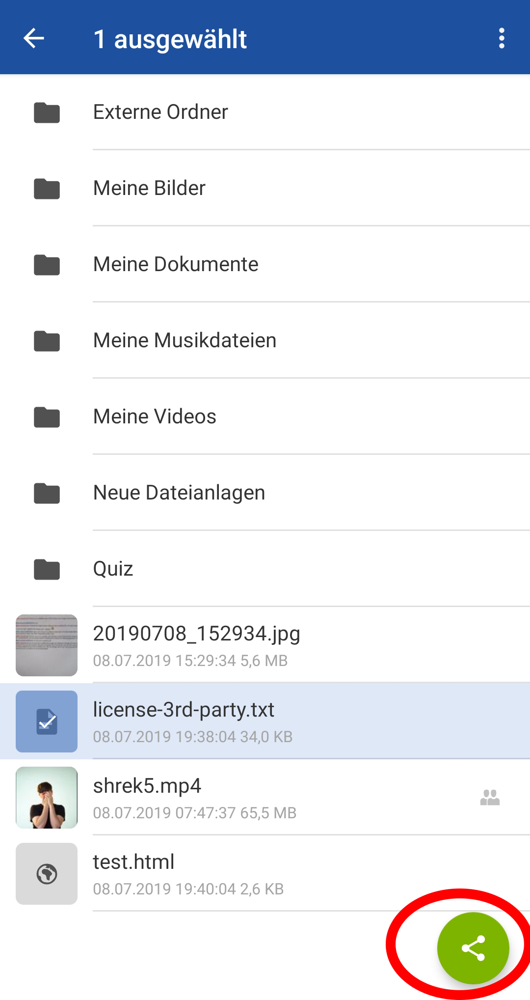
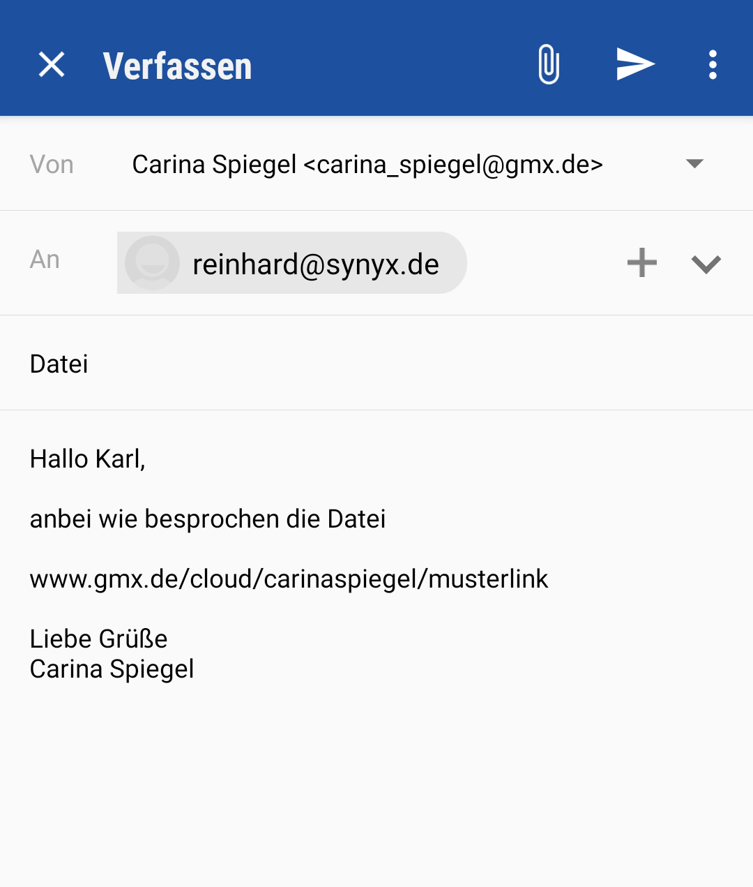

Vorbereitung - Wenn die Datei noch nicht in die Cloud geladen wurde
Klicken Sie im Mitgliederbereich in der oberen Leiste auf „Cloud“.
Wählen Sie auf Ihrer Festplatte eine oder mehrere Dateien aus die Sie freigeben möchten und ziehen Sie diese in die Cloud. Alternativ können Sie links auf den grünen Button "Hochladen" klicken und Dateien oder Ordner hochladen auswählen.
Nach erfolgreichem Upload können Sie das kleine Upload-Fenster schließen und anschließend mit Schritt 2 der Vorgehensweise beginnen.
Vorgehensweise
Klicken Sie in der App auf den grünen, runden Button mit dem Bleistift-Symbol.
Geben Sie den Empfänger der E-Mail an und schreiben Sie ggfs. einen Text. Auf Wunsch können Sie auch weitere Dateien in der E-Mail anhängen.
Klicken Sie auf das Büroklammer Zeichen oberhalb des Textfeldes. Es erscheint ein Auswahlfeld bei dem Sie zwischen "Foto hinzufügen", "Aus GMX Cloud" und "Vom Gerät" wählen können.
Klicken Sie auf "Aus GMX Cloud".
Es öffnet sich ein Fenster mit einer Übersicht der Cloud.
Wählen Sie eine oder mehrere Dateien aus die Sie freigeben möchten.
Klicken Sie auf den Teilen-Button. 
Es öffnet sich nun ein Fenster mit Apps über die die Dateien geteilt werden können, einem generierten Freigabelink sowie den Freigabeeinstellungen.
Ist die Datei (oder alle Dateien zusammen) größer als 50 MB, so wird in diesem Fenster ein Warnhinweis angezeigt.
Nehmen Sie nun gegebenenfalls Freigabeeinstellungen vor.
Klicken Sie hierfür auf „Freigabeeinstellungen“.
Möchten Sie die Freigabe schützen, setzen Sie einen Haken bei „Mit Passwort schützen“ und geben nun ein Passwort mit mindestens 5 Zeichen ein.
Um die Gültigkeit der Freigabedauer einzuschränken, wählen Sie „Freigabedauer ändern“ aus und legen die Gültidkeitsdauer auf 1 Woche, 1 Monat oder 1 Jahr fest.
Haben Sie alles angepasst, klicken Sie auf „Speichern“ und Sie gelangen zurück zum Freigabelink.
Um den Freigabelink direkt mit Ihren Kontakten zu teilen, klicken Sie auf „Link per E-Mail versenden“.
Der Link erscheint nun automatisch am Ende Ihrer E-Mail. Sie können ihn nun markieren und an die gewünschte Stelle ziehen. 
Klicken Sie auf den „Senden“ Button mit dem Pfeil, um die E-Mail abzuschicken.